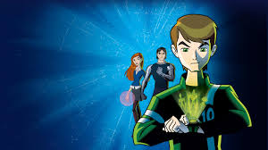
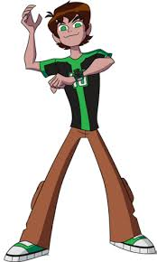
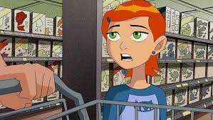

The Amazing World of Ben 10
Published on February 19, 2025

Ben 10 is a popular animated television series that originally premiered on Cartoon Network in 2005. The series follows a young boy named Ben Tennyson, who stumbles upon a mysterious device called the Omnitrix. This device allows him to transform into different aliens, each with unique powers. Together with his cousin Gwen and their grandfather Max, Ben embarks on many exciting adventures, fighting evil forces and saving the world from dangerous threats.
The Omnitrix: A Game-Changer
The Omnitrix is one of the most interesting aspects of the series. This alien watch-like device gives Ben the ability to transform into over 70 different alien species, each with its own abilities. For instance, he can turn into the mighty Four Arms, the quick and intelligent XLR8, or the destructive Heatblast. The Omnitrix itself is mysterious, with its origins tied to ancient alien civilizations, making it a key element in the series' overall storyline.
Key Characters
- Ben Tennyson : The main protagonist,
a 10-year-old boy who becomes
a hero after discovering the Omnitrix.

- Gwen Tennyson: Ben's intelligent and resourceful
cousin who often helps him on his adventures.

- Grandpa Max: Ben and Gwen's grandfather,
a retired plumber who guides them in their journey.
Ben 10 has become a cultural phenomenon, with several seasons, spin-offs, movies, and even video games.
Its success has led to multiple reboots,
with each version introducing
new characters,
aliens, and
exciting storylines. The franchise continues to captivate young audiences worldwide, making it one of the most beloved animated series of all time.